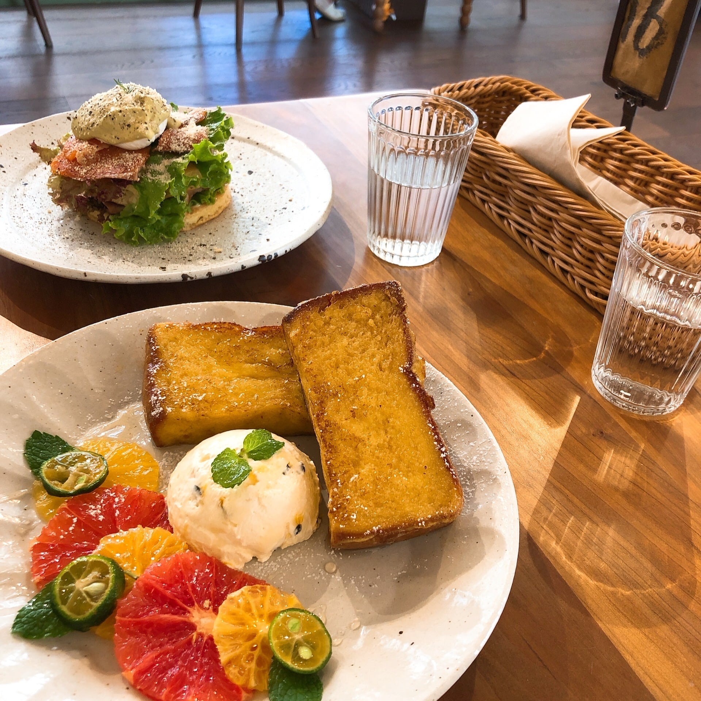

About Me
Hello, this is Junhong! I was born in Beijing, China and spent my time before college there. In 2017, I moved to Los Angeles for undergraduate studies, and now I’m in Pittsburgh! Here are a few things I do outside of research.
Teaching and mentoring
Carnegie Mellon University
- Teaching Assistant: 10718 ML in Practice, Fall 2024; 10714 Deep Learning Systems, Fall 2023
- Mentoring Samuel Guo (2021-2023), Wenduo Cheng (2023-Present)
University of California, Los Angeles
- Teaching Assistant, Math 115A Linear Algebra, 2019-2021
Hobbies and interests
Films and theaters
I loving watching moves and shows! At UCLA, I was a member of the ColdBlue Film Studio and wrote the script for the documentary On the Road, which was presented on the 2019 UCLA Chinese Cultural Night. I also joined the Cfan Chinese Theatre Group and participated in the stage management of three plays, The Enemy of the People, Birthday Party, and The Good Person of Szechwan.
Exercising
I enjoy hiking, boxing, and dancing (Jazz, Hip-hop, K-Pop, and Contemporary)!
Traveling
Nothing is better than traveling to different places and trying out foods that I’ve never had before! I also love taking pictures when traveling.
|  |